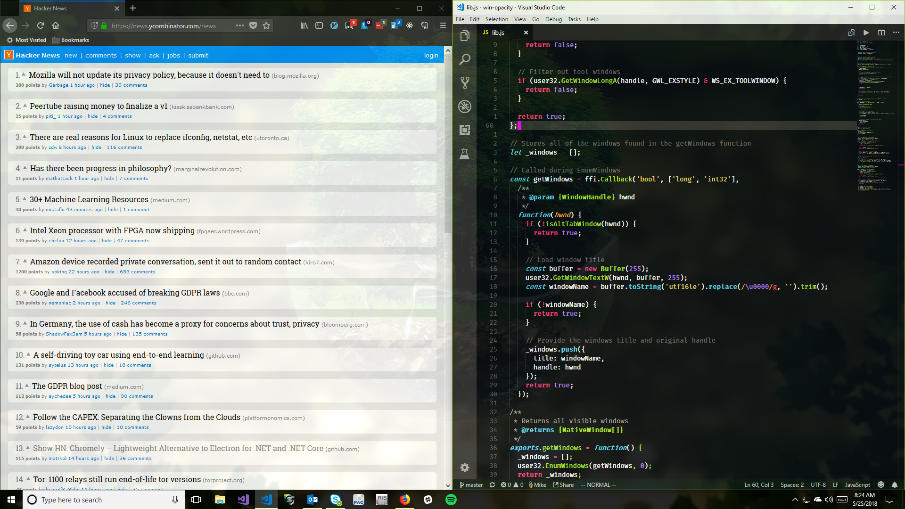

How I Made Windows Sexier with Opacity
I have a confession to make. I spend far too much of my time screwing around with theme settings of all kinds. Editor themes, syntax themes, wallpapers, you name it. Tweaking my environment to perfectly fit my style and needs is a bit of a compulsion of mine. For that same reason, I've always been envious of *nix systems. There is so much power there for customization as long as you're willing to work through it. I actually like using Linux but I use Windows for various reasons. It doesn't help that I currently work at a .NET shop.
One day when I was tweaking my new main squeeze I came across an awesome extension. The vscode-win-opacity extension by SkaceKamen allows you to set the opacity level of the VS Code window.

I fell in love. Head over heels, puppy dog love. It was kind of disgusting.
I knew in a general sense that Windows supported transparency since, for example, my taskbar is transparent. But it hadn't occurred to me that arbitrary windows could be made to be transparent. Thus, I made it my goal in life (or at least for the week) to discover how the wizard named SkaceKamen had performed this magic and invoke the incantations myself. The end result is a general library that I posted named, rather imaginatively, win-opacity.
How did they do it?
The source code for the original extension proved useful. I was able to copy out certain sections and get a micro-demo going really quickly. But I wanted to really understand how it works and that required me to take a foray into the Windows API. Before I could do that, I needed to learn a thing or two about foreign function interfaces (FFI). A foreign function interface is, for my purposes, a way to call into functionality that exists outside of the language you're writing in. For example, calling into a C API from JavaScript. Luckily for me, this is pretty easy to do with node-ffi. Hooking into a native API is as simple as
const ffi = require('ffi');
const lib = ffi.Library(nameOfLibrary, {
NameOfFunction: [
returnType,
[parameterType1, parameterType2, ...]
]
});
Now all I had to do was hook this up to the correct API and get going.
The thing is... I've never actually worked with any Windows APIs directly. Anytime I needed something, like window creation, I always used libraries which wrapped away all of that nastiness. It turns out, it's not actually that bad. At least not the part that I worked with. The first thing I needed to do was find a way to access available windows. The function for that is called EnumWindows. With some help from ref for getting the right types, I had that function hooked up. I gotta say though, this function works in a slightly unusual way. EnumWindows takes a callback which is called for each window it finds. If that callback returns true, it will continue on to the next window. Otherwise, it will stop iterating. It works kind of like every in JavaScript. The reason I say it's unusual is because of the kind of code it forces you to write. You can't just pass any old callback to it like you would expect to in JavaScript. Normally, I would just write something like this:
let windows = [];
user32.EnumWindows((handle) => {
if (isAGoodWindow(handle)) {
windows.push(handle);
}
return true;
});
However, it needs to be wrapped up in a way that works with the FFI layer. Something like this:
const enumWindowsCallback = ffi.Callback(
'bool', // Return type
['long', 'int32'], // Parameter types
function(handle, _) {
...
}
);
Which could be done every time you need to grab a set of windows but it just seems wasteful to re-initialize it every time. This results in slightly unorthodox JavaScript but it's not a big deal.
The really interesting bit comes when you try to apply opacity to the windows you've found.
Windows have basic and extended styles. This includes things like what kind of border the window has, what order things are drawn in, and if the window is layered. That last one is what I needed. Layered windows are a special feature of Windows 8+ which can be used for various alpha effects. By enabling this flag, we can set the opacity of a window. It's as easy as:
const windowLong = user32.GetWindowLongA(handle, GWL_EXSTYLE);
user32.SetWindowLongA(
handle, GWL_EXSTYLE, windowLong | WS_EX_LAYERED
);
user32.SetLayeredWindowAttributes(handle, 0, opacity, LWA_ALPHA);
Okay, fine. This needs a little bit of unpacking. GetWindowLongA takes a window handle and returns the value associated with a given flag. In this case, I grabbed the extended styles bitmask assigned to the window. Next, I re-assign the extended styles value but add in the layered window bit flag. Finally, just assigned the opacity value to the layered window alpha attribute. That's it! Nothing too exotic going on here but this was a fun first dive into the Windows API.
This was a pretty fast and fun project. What I really like about this project is this is something I now use all of the time. I even wrote a little tool to allow me to configure different kinds of windows to have different levels of opacity all the time. It runs on startup and my setup has never looked sweeter.
